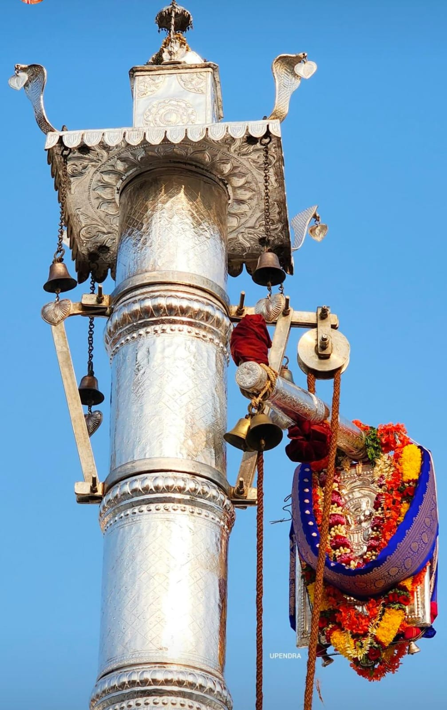
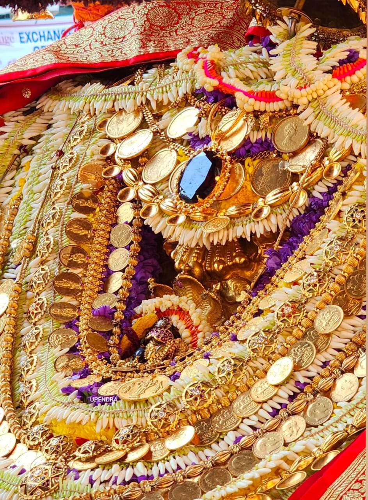
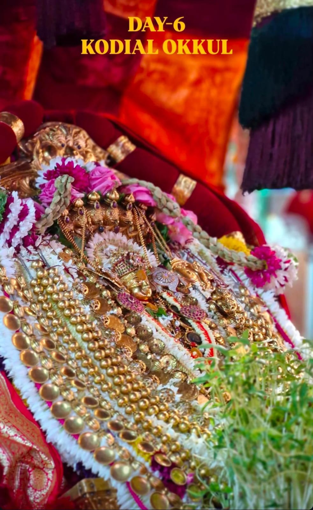

1. Significance of Kodial Teru
Kodial Teru is a sacred and cultural celebration of Lord Shree Venkataramana, who is believed to be an incarnation of Lord Vishnu. It marks the annual chariot festival, symbolizing the divine journey of the Lord among His devotees. The festival strengthens the bond between the community, enhances devotion, and is believed to bring prosperity and blessings to all participants.
Day 1: Dwajarohanam & Bhandi Garudotsava

Dwajarohanam: Dwajarohanam marks the official beginning of Kodial Teru.There are two different opinions from the people about dwajarohanam.
• Some people believe that the flag of Lord Garuda is hoisted because it indicates the beginning of the festival where lord Garuda goes out in search for a bride for Lord Veera Venkatesha but as he returns, the marriage of Lord Venkataramana and Padmavati or Bhoodevi is already being done.
• Some others believe that the sacred flag (Garuda Dhwaja) is hoisted on the temple Dwaja Sthambha (flagpole), signifying the invitation from Lord Garuda to all the celestial beings to witness and bless the festival.
• It's also said that since Lord Venkataramana was seated in Giant Ratha he told Lord Garud (vahan/vehicle of Lord Venkataramana)to sit above the silver pillar, to watch and enjoy this festival.
Ratri Bhandi Garudotsava: Lord Vishnu on Garuda vahana is taken in a night chariot procession amid chanting, lights, and bhajans.
Day 2: Hagalu Belli Pallanki Utsava

• This is a daytime (Hagalu) palanquin (Pallanki) procession.
• The deity is carried in a beautifully decorated pallakki (palanquin) through the temple streets.
• Devotees offer flowers and prayers, creating a serene and divine atmosphere.
• Lord goes out of temple to bless the people in their places. Hagalu utsava is performed as a significance of Mahotsavas.
Day 3: Chandramandalotsava
.jpg)
This utsava was introduced this year in the Kodial Teru. This utsava was introduced before in Shree Venkataramana temples of Mulki, Bantwal and Manjeshwara. Chandramandala Vahana is a special chariot with 5 wheels & the wheel mechanism is such that the wheels are connected to a rod with gear system spinning the rod where flags will be attached on top of those rods. As the chandramandala vahana moves the rod spins making the flags on top rotate making it a special Vahana for Lord.
Day 4: Mriga Bete & Saan Teru
 >
>
Mriga Bete:Mriga bete signifies that of Tretayuga Rama indulging in Hunting cruel animals. Lord goes for Mrigbete in order to hunt the negativity among the people. In Mrigbete utsava two males among the devotees will be made prey of God & will be honored with prasadam
Saan Teru: Saan Teru (Small Chariot Festival) is a mini-rathotsava where the Lord is taken in a smaller chariot before the grand Brahma Rathotsava. Devotees pull the chariot, symbolizing their participation in the Lord’s journey. Saan teru indicates the victory procession of Lord Veera Venkatesha. On this day only the idol of Venkataramana is placed on the giant wooden chariot.
Day 5: Brahma Rathotsava

Ratharohana (Chariot Procession): On the main day, the idol of Lord Venkataramana is ceremoniously placed in the richly decorated Brahma Ratha. Devotees gather in large numbers to pull the chariot through the streets surrounding the temple, accompanied by chanting of hymns, and bhajans. This act of pulling the chariot is considered highly auspicious and is believed to invite good fortune.On this day both the idols of Lord Venkataramana and Goddess Bhoodevi is placed in the Giant wooden Ratha.
Day 6: Okkuli & Conclusion

On the sixth day of Kodial Teru, the festival culminates with the Avabrutha Mangalotsava, also referred to as Okkuli. This day is characterized by vibrant celebrations where devotees engage in playful water splashing, and playing with colours just like the holi festival which is widely celebrated in North India. Avabritha Snana will be taken place after all Mahotsavas. Utsava murthy along with Pattada devaru resembles in Vasanth Mantap for Churnotsava where haldi bath is given to lord followed by Hagalotsava & Avabritha snana. As the lord comes back to temple Dwajavarohana will be performed as a mark of end of Mahotsava.